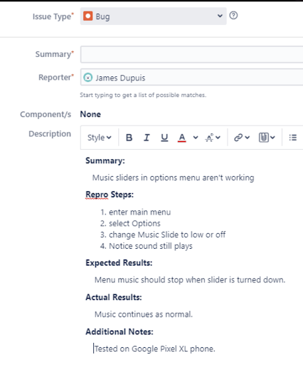
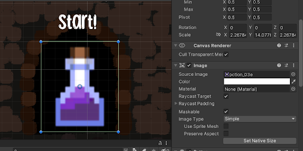
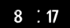
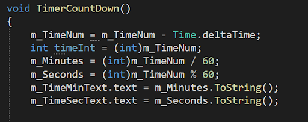
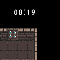
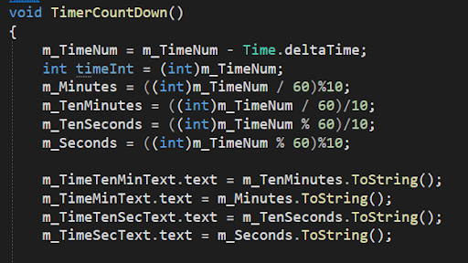

This was our last week working on the project! Our game structure, mechanism, art, and text content were all completed. The polish work also met our expectations, so this week we focused on quality assurance work. Our professor James helped us walk through the process of the game test and gave us a template of a test bug report.
The interesting part was that the way we debugged our game didn’t seem right to me that we created the bug, and then we said we found it and wrote a report about it, so I brought up the idea that we should debug the other team’s game. I was happy that our professor James also thought it was a good idea, and it could be how the students next year are going to work on the debugging week.
I noticed that after my teammate Josh implemented the new input system, the interaction between cursor and buttons changed. It was an interesting input system. There were some details I didn’t know such as how the cursor works in XBox controller mode. I worked with Josh to modify the settings of each button.
Then I learned that the toggles worked differently as buttons when it came to the cursor clicking, so Josh and I agreed to change the toggles to buttons which could make the debugging tasks easier since we didn’t have to find the way to work on the toggles.
Then I worked on improving the appearance of the timer. The original worked fine, but the layout of it would misform when converting numbers between tens and ones.
 The way I fixed it was to add spots so no matter the number is in tens or ones, the format would keep the same.
 